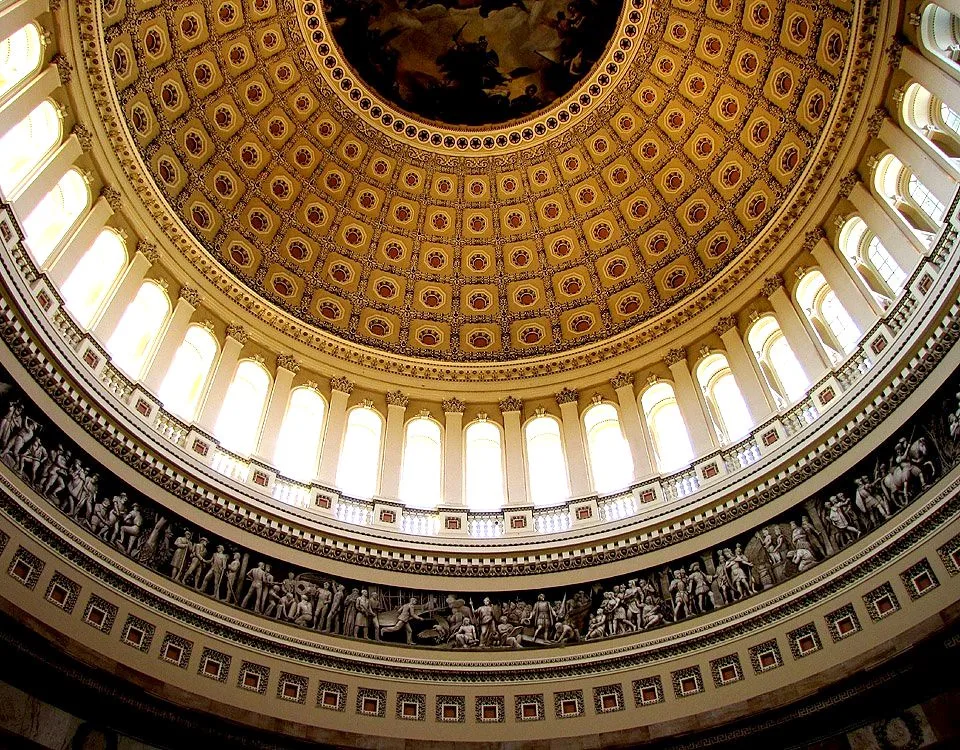
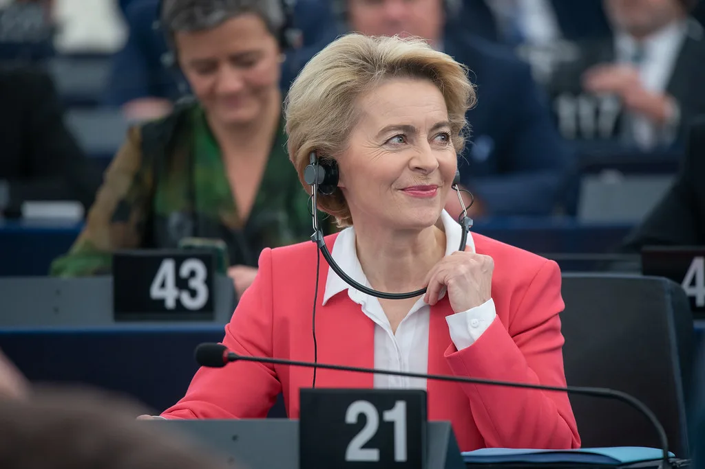

국감 2주차 막판까지 충돌…이재명 대통령 재판·이진숙 제척 공방
이재명 정부 2년차 첫 국정감사가 2주차 마지막 날까지 여야의 격한 공방으로 얼룩졌다. 지난 6일 시작된 올해 국감은 27일까지 이어지며, 정보위원회와 여성가족위원회, 운영위원회의 대통령비서실 국감 등 일부 상임위는 30일까지 일정이 연장돼 있다. 2주차 들어 여야는 경찰 개혁, 사법부 독립, 한미 관계 등을 놓고 날을 세웠는데, 특히 법제사법위원회와 과학기술정보방송통신위원회에서는 감사가 한동안 중단될 정도로 충돌이 격화됐다.
법사위의 서울고등법원 등에 대한 국감에서는 이재명 대통령 재판을 둘러싼 논쟁이 다시 불거졌다. 더불어민주당은 대통령의 불소추특권을 규정한 헌법 제84조가 '내란 또는 외환의 죄를 범한 경우'를 제외하고는 진행 중인 재판까지 포함하는 것으로 해석해야 한다며, 대통령 재임 중 형사재판 절차를 멈춰야 한다는 입장을 재확인했다. 반면 국민의힘은 이 같은 해석이 헌법 조문을 자의적으로 확대한 편법이라고 반박하며, 사법 절차의 정상적 진행을 가로막아서는 안 된다고 맞섰다. 조희대 대법원장의 재판 파기환송 문제까지 맞물리며 법사위 안팎의 긴장은 쉽게 풀리지 않는 분위기다.

과방위의 한국방송공사(KBS) 등에 대한 국감은 이진숙 국민의힘 의원에 대한 제척 문제로 파행을 겪었다. 범여권은 지난 12일 방송통신위원회 등에 대한 국감 도중, 이 의원이 과거 방송통신위원장으로 재직할 당시 직접 관여한 사안이 이번 감사 대상에 포함돼 있다며 이해충돌을 이유로 제척안을 의결했다. 국민의힘은 이에 강하게 반발해 헌법재판소에 권한쟁의심판과 효력정지 가처분을 청구했고, 제척 결정의 효력과 정당성을 둘러싼 여야의 공방은 2주차 내내 이어졌다.
교육위원회 국감에서도 긴장감이 이어졌다. 여야는 유승민 전 의원의 딸인 유담 씨의 교수 임용을 둘러싼 특혜 의혹을 놓고 설전을 벌였으며, 임용 과정의 투명성과 공정성 검증이 충분했는지를 둘러싼 이견이 좀처럼 좁혀지지 않았다. 이 밖에도 교육재정 배분 문제와 북한의 비무장지대(DMZ) 지뢰 도발에 대한 정부 대응, 유엔을 통한 규탄 조치의 적절성 등도 상임위별로 쟁점으로 다뤄지며 국감장 곳곳에서 여야의 신경전이 계속됐다.

정치권에서는 국감 중반을 넘기면서도 여야가 정책 검증보다 정쟁에 더 많은 시간을 쏟고 있다는 비판이 꾸준히 제기된다. 예산안 심사와 법안 처리를 앞둔 정기국회 일정을 고려하면, 사법·방송 관련 쟁점이 계속 길어질 경우 후반부 민생 법안 논의에 차질이 생길 수 있다는 우려도 나온다. 특히 헌법재판소의 이진숙 의원 제척 관련 결정이 어떻게 내려지느냐에 따라 과방위 국감 일정 자체가 다시 흔들릴 가능성도 거론된다.
국회는 3주차부터 남은 상임위별 감사와 종합감사 일정을 이어갈 예정이며, 여야는 각자 자당에 유리한 쟁점을 부각하며 책임을 서로에게 돌리는 공방을 계속할 것으로 보인다. 결국 이번 국감이 실질적인 정책 검증으로 이어질지, 아니면 정쟁으로 마무리될지는 남은 2주간의 상임위별 운영에 달려 있다는 관측이 나온다. 여야 원내지도부가 막판 쟁점들을 어느 수준까지 조율할 수 있을지가 정기국회 후반부 예산안·법안 심사의 순조로운 진행 여부도 함께 가를 것으로 보인다.